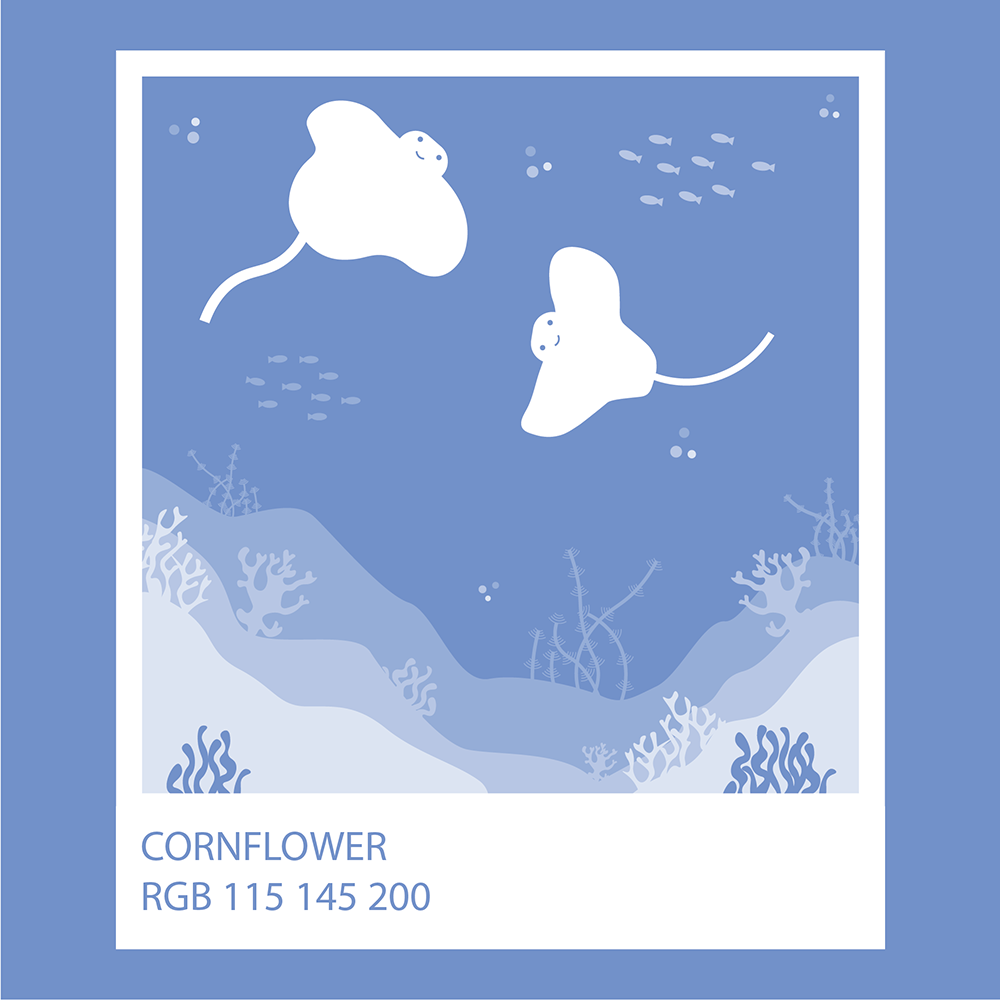
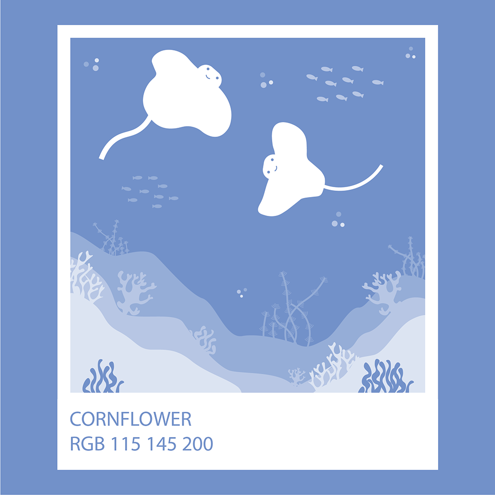
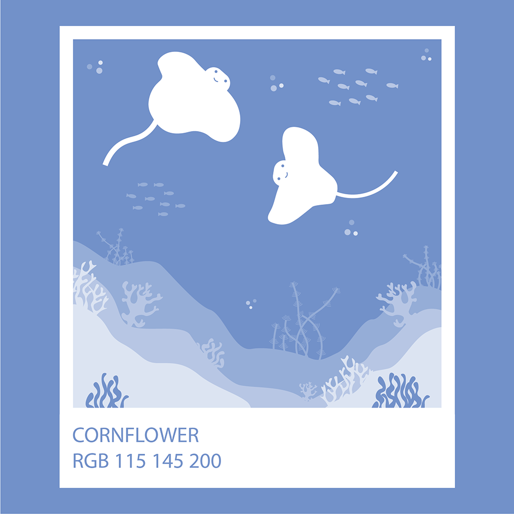
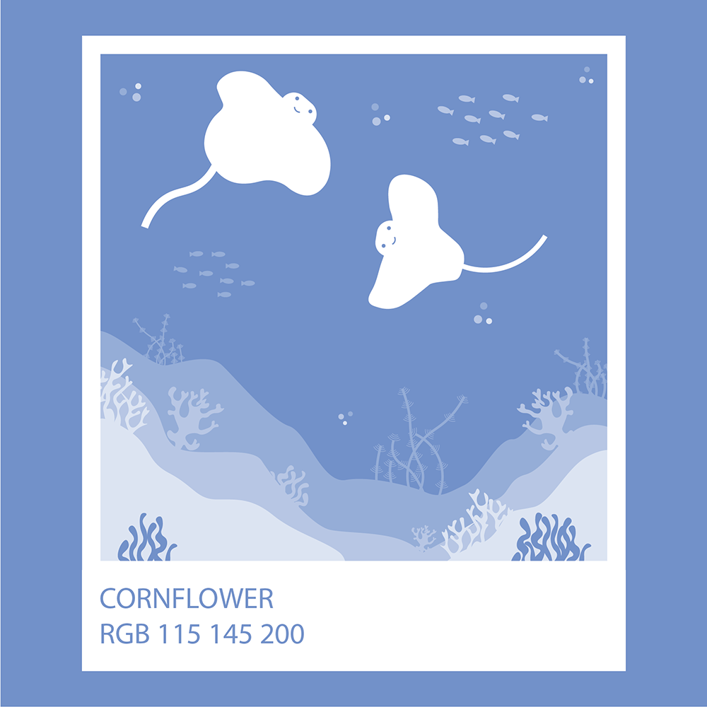

Here is some Harry Potter Ipsum just for fun! Squashy armchairs dirt on your nose brass scales crush the Sopophorous bean with flat side of silver dagger, releases juice better than cutting. Full moon Whomping Willow three turns should do it lemon drops. Locomotor trunks owl treats that will be 50 points, Mr. Potter. Witch Weekly, he will rise again and he will come for us, headmaster Erumpent horn. Fenrir Grayback horseless carriages ‘zis is a chance many would die for! Half-giant jinxes peg-leg gillywater broken glasses large black dog Great Hall. Nearly-Headless Nick now string them together, and answer me this, which creature would you be unwilling to kiss? Poltergeist sticking charm, troll umbrella stand flying cars golden locket Lily Potter. Pumpkin juice Trevor wave your wand out glass orbs, a Grim knitted hats.